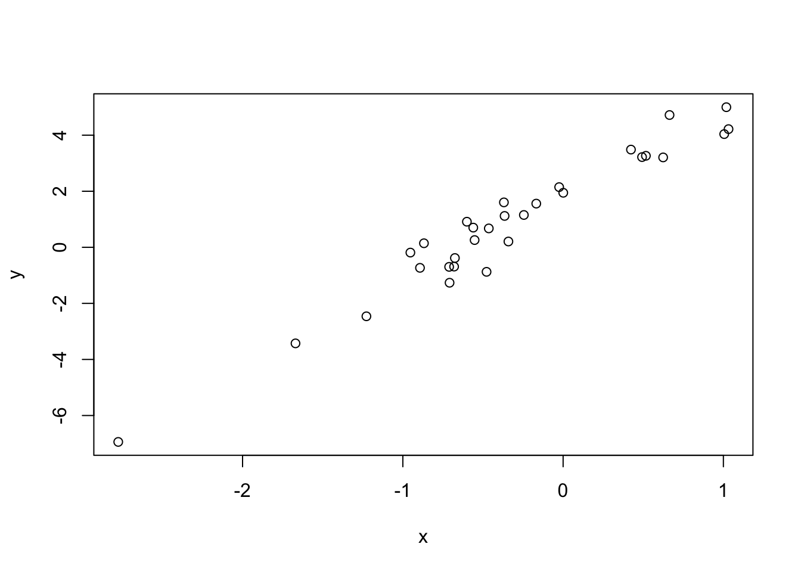
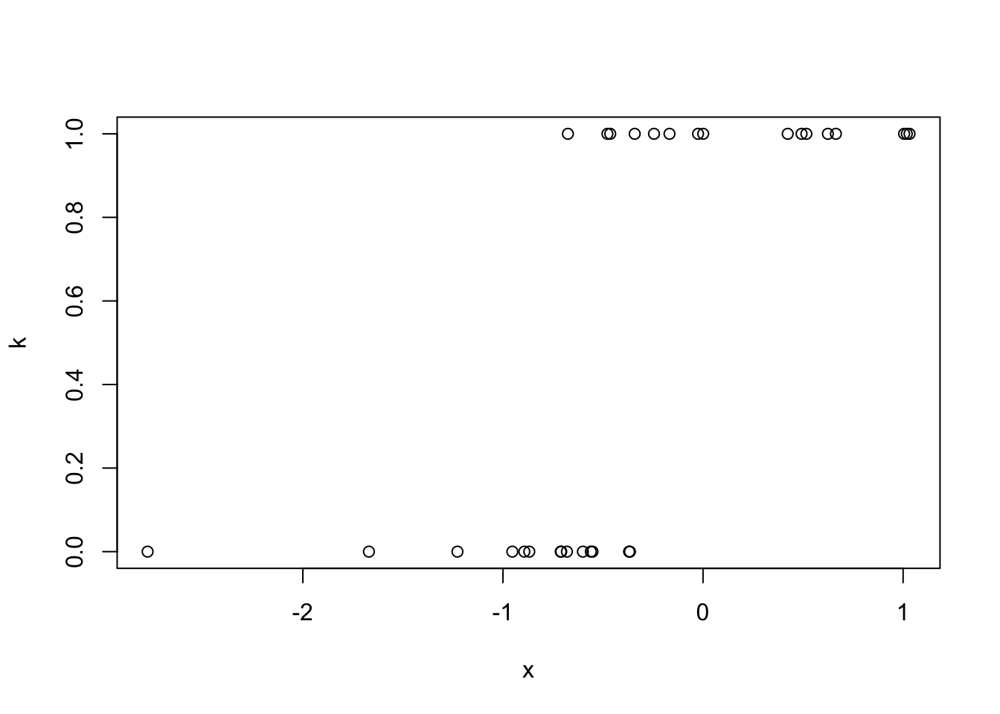

To learn everything there is to know about R, read the docs. To learn just enough to be dangerous, follow along :)
This workshop serves as a gentle introduction to programming with R, with a focus on application to data science and research. We will cover the basics of R, such as using the command line as a calculator, working with variables, simple data structures, and data types. We will show how to load data sets into R, and how to summarize data with statistics and plots. At the end we will also discuss some considerations when choosing R over other programming languages like Python or SPSS.
| Operator | Description | Example |
|---|---|---|
+ |
addition | 3 + 4 = 7 |
- |
subtraction | 10 - 2 = 8 |
* |
multiplication | 2.5 * 4 = 10 |
/ |
division | 9 / 2 = 4.5 |
^ |
exponentiation | 11^2 = 121 |
%% |
modulus | 5 %% 3 = 2 |
%/% |
integer division | 9 %/% 2 = 4 |
# Order of operations still applies
5 - 4 + 5*2^4## [1] 81# Use parentheses to ensure desired order of operations
(-2 + (5 / 3.8)) * 1.618^2## [1] -1.791211I say there are three types of numbers in R because R has different ways of working with different numbers
| Number type | Description | Example |
|---|---|---|
| Integer | Whole numbers, positive or negative | 4L, -3L, 0L |
| Decimal | Any number, positive or negative, with a fractional part | 3.1, pi, 4.0 |
| Complex | A real decimal number with an imaginary decimal part | -2.1+5i |
Notice that the integers have an L at the end. This is
to explicitly tell R to represent a number as a [long]
integer, rather than a double (decimal) number.
is.integer(4) # FALSE## [1] FALSEis.double(4) # TRUE## [1] TRUEis.integer(4L) # TRUE## [1] TRUELogical operators test for a condition. They ask a question, and the
answer is either TRUE or FALSE.
| Operator | Description | Example |
|---|---|---|
< |
less than | 5 < 4 -> FALSE |
<= |
less than or equal | 6 <= 6 -> TRUE |
> |
greater than | Inf > 1e6 -> TRUE |
>= |
greater than or equal | 3.5 >= 9 -> FALSE |
== |
exactly equal | sin(0) == 0 -> TRUE |
!= |
not equal | (3+1)^2 != 3^2 + 1^1 -> TRUE |
! |
not | !TRUE -> FALSE |
&& |
and (short-circuiting) | (5 < 7) && (7 < 10) -> TRUE |
| ` | ` | |
& |
and (vectorized) | TRUE & 2 > c(1,2,3) -> c(FALSE, FALSE, TRUE) |
| ` | ` | or (vectorized) |
| Function | Description | Example |
|---|---|---|
abs |
absolute value of a number | abs(-2.5), abs(3L), abs(3+4i) |
sqrt |
square root of a number | sqrt(0.81), sqrt(-1+0i) |
exp |
\(e^x\) | exp(1) -> 2.7182818 |
log |
logarithm of a number (base is the natural number \(e\) by default) | |
log10 |
base 10 logarithm of a number (see also
log2, log1p, logb) |
|
sin, cos,
tan |
basic trigonometric functions (radians by default) | |
asin, acos,
atan |
inverse trigonometric functions | |
sinh, asinh, etc. |
hyperbolic and inverse hyperbolic trigonometric functions | |
ceiling |
rounds a number towards infinity | ceiling(-2.8) -> -2 |
floor |
rounds a number towards negative infinity | floor(3.9) -> 3 |
round |
rounds a number to a specified number of digits (round to even by default) | |
trunc |
strips the decimal part from a number | trunc(2.1) -> 2,
trunc(2.9) -> 2 |
Also note, all infix operations can be used with prefix notation:
3 + 4 # infix## [1] 7`+`(3, 4) # prefix## [1] 7| Keyword | Description | Example |
|---|---|---|
Inf |
The floating point representation of infinity | 1 / 0 -> Inf |
-Inf |
Negative infinity | 1 / -0 -> -Inf |
NaN |
Not a Number | 0 / 0 -> NaN |
NA |
A placeholder for missing values | |
NULL |
An R object representing the empty set or nothing | |
pi |
The ratio of a circle’s circumference to its diameter | 3.14159... |
The Institute of Electrical and Electronics Engineers (IEEE, “eye-triple-ee”) sets many of the standards for computer protocol, including how floating point numbers behave. A floating point number is the computer representation of a real number, but due to finite precision, there are some inconsistencies:
0.3 - 0.1 # should be 0.2## [1] 0.2(0.3 - 0.1) == 0.2 # should be true## [1] FALSE# R is lying to us!
print(0.3-0.1, digits = 20)## [1] 0.19999999999999998335# use `all.equal` to test floating point equality
all.equal(0.3 - 0.1, 0.2)## [1] TRUEThe quadratic equation is used to find the roots of quadratic (2nd degree) polynomials. For a quadratic polynomial given by
\[ ax^2 + bx + c \]
the roots are given by
\[ x_{1,2} = \frac{-b \pm \sqrt{b^2 -4ac}}{2a} \]
Find the roots of the following equations using the quadratic equation:
Most if not all functions in R have useful help documentation that can be accessed directly within the R console.
> help(sum)
> ?sum
> library(help = "base")To create a new variable, we can use left or right assignment:
# left assignment
x <- 10
# right assignment
"some string" -> yTo list all variables in the session (environment), do:
# list all variables in the environment
ls()## [1] "cols" "ends" "names" "read_fwf2"
## [5] "starts" "values" "weather_raw" "weather_rawTest"
## [9] "x" "y"We can see what is stored in those variables by typing them into the console:
# show what is stored in the variables
x## [1] 10y## [1] "some string"Good variable naming conventions (in R)
mean,
c) and objects (e.g. T, F,
pi)
# logical (boolean)
typeof(TRUE)## [1] "logical"# integer
typeof(5L) # note the 'L' at the end## [1] "integer"# double
typeof(6.3)## [1] "double"typeof(4) # no 'L' at the end --> double## [1] "double"# complex
typeof(3 + 2i)## [1] "complex"# character
typeof("hello world")## [1] "character"Coercion and conversion
typeof(TRUE + 3L)## [1] "integer"typeof(TRUE + 3.0)## [1] "double"typeof(TRUE + 3 + 0i)## [1] "complex"Guess the output type
# a "regular" number
14## [1] 14# integer division
14 %/% 3## [1] 4# remainder
14 %% 3## [1] 2# ceiling/floor/round
ceiling(pi)## [1] 4round(pi)## [1] 3How can we ensure the output type of an operation? Most of the time
it’s okay to let R worry about the return types. In other
situations, there’s the as command:
as.integer(4.0)## [1] 4as.logical(4L) # any non-zero value is true## [1] TRUEas.complex(4)## [1] 4+0ias.double("3.14159")## [1] 3.14159Careful, as not every value can be coerced to every other type, or no robust checks will be performed to ensure validity of a conversion:
# converts to an integer via truncation
as.integer(4.5)## [1] 4Testing for types
We can use the is command to ask R what the type of an
object is:
is.integer(4L)## [1] TRUEis.double(3+2i)## [1] FALSEis.numeric(4)## [1] TRUEis.numeric(4L)## [1] TRUEis.numeric(4+2i)## [1] FALSESometimes a thing that looks like an integer is really a double:
# actually a double
x <- 4
is.integer(x)## [1] FALSEHow to check that a number is an integer:
as.integer(x) == x## [1] TRUEA factor looks like a string, but acts like an integer (most of the time).
# most often used for categorical observations
pets <- c("cat", "dog", "lizard", "raccoon")
(pet_obs <- sample(pets, 20, TRUE))## [1] "cat" "raccoon" "lizard" "cat" "cat" "lizard" "raccoon"
## [8] "dog" "dog" "dog" "dog" "cat" "cat" "cat"
## [15] "cat" "lizard" "raccoon" "raccoon" "raccoon" "lizard"# Turn the character vector into a set of factors
pet_fct <- factor(pet_obs)
pet_fct## [1] cat raccoon lizard cat cat lizard raccoon dog dog
## [10] dog dog cat cat cat cat lizard raccoon raccoon
## [19] raccoon lizard
## Levels: cat dog lizard raccoon# can be converted to an integer vector
as.integer(pet_fct)## [1] 1 4 3 1 1 3 4 2 2 2 2 1 1 1 1 3 4 4 4 3# can be converted to a character vector
as.character(pet_fct)## [1] "cat" "raccoon" "lizard" "cat" "cat" "lizard" "raccoon"
## [8] "dog" "dog" "dog" "dog" "cat" "cat" "cat"
## [15] "cat" "lizard" "raccoon" "raccoon" "raccoon" "lizard"For a full overview, see the R documentation on basic types.
c()# a few vectors
c(4.5, 2, 3.8)
1:4
c(TRUE, FALSE, FALSE)
seq(from = 0.1, to = 1.0, by = 0.4)
LETTERS## [1] 4.5 2.0 3.8
## [1] 1 2 3 4
## [1] TRUE FALSE FALSE
## [1] 0.1 0.5 0.9
## [1] "A" "B" "C" "D" "E" "F" "G" "H" "I" "J" "K" "L" "M" "N" "O" "P" "Q" "R" "S"
## [20] "T" "U" "V" "W" "X" "Y" "Z"Question: What is meant by “least restrictive type”?
# mix of integer and logical
c(TRUE, 5L, -2L, FALSE)## [1] 1 5 -2 0# mix of integer and double
c(5L, pi, -7L, 2.2)## [1] 5.000000 3.141593 -7.000000 2.200000# mix of double and complex
c(pi, -2+7i, 6.9, -3.5i)## [1] 3.141593+0.0i -2.000000+7.0i 6.900000+0.0i 0.000000-3.5i# mix of double and character
c("asdf", 6.12, pi, "3")## [1] "asdf" "6.12" "3.14159265358979" "3"We can access the elements of a vector by using brackets:
[]. Note that R uses “one-based indexing”, meaning that
arrays start at \(1\), not \(0\).
# accessing a single element from `letters`
letters[4]## [1] "d"# accessing multiple elements using a vector of indices
letters[c(1, 3, 5)]## [1] "a" "c" "e"# accessing a subset using conditionals
x <- 1:10
x[x < 4]## [1] 1 2 3# accessing the last element
tail(letters, n = 1)## [1] "z"letters[length(letters)]## [1] "z"dim
attribute# creating a matrix using the `matrix()` function
matrix(1:12, nrow = 3, ncol = 4)## [,1] [,2] [,3] [,4]
## [1,] 1 4 7 10
## [2,] 2 5 8 11
## [3,] 3 6 9 12# filling a matrix with a single value
matrix("m", nrow = 5, ncol = 2)## [,1] [,2]
## [1,] "m" "m"
## [2,] "m" "m"
## [3,] "m" "m"
## [4,] "m" "m"
## [5,] "m" "m"Matrices (and vectors and arrays) are stored in column-major order
# default: fills in down each column
matrix(1:12, nrow = 3)## [,1] [,2] [,3] [,4]
## [1,] 1 4 7 10
## [2,] 2 5 8 11
## [3,] 3 6 9 12# explicitly fill in accross rows first
matrix(1:12, nrow = 3, byrow = TRUE)## [,1] [,2] [,3] [,4]
## [1,] 1 2 3 4
## [2,] 5 6 7 8
## [3,] 9 10 11 12Elements of a matrix can either be accessed with row-column pairs, or with linear indexing
# create a 3x5 matrix
(M <- matrix(1:15, nrow = 3))## [,1] [,2] [,3] [,4] [,5]
## [1,] 1 4 7 10 13
## [2,] 2 5 8 11 14
## [3,] 3 6 9 12 15# get the element at the second row and fourth column
M[2, 4]## [1] 11# get the 8th element in memory
M[8]## [1] 8You can create subsets of a matrix using a pair of vectors for indices.
# get rows 1 and 3, and columns 2 and 4
M[c(1, 3), c(2, 4)]## [,1] [,2]
## [1,] 4 10
## [2,] 6 12A matrix can be turned back into a vector by removing its dimension attribute. In the same way, a matrix can be reshaped, or a vector can be turned into a matrix.
# show the attributes of the matrix, M
attributes(M)## $dim
## [1] 3 5# get the `dim` attribute
attr(M, "dim")## [1] 3 5# remove the `dim` attribute by setting it to `NULL`
attr(M, "dim") <- NULL
M## [1] 1 2 3 4 5 6 7 8 9 10 11 12 13 14 15# turn M into a 5x3 matrix
attr(M, "dim") <- c(5, 3)
M## [,1] [,2] [,3]
## [1,] 1 6 11
## [2,] 2 7 12
## [3,] 3 8 13
## [4,] 4 9 14
## [5,] 5 10 15array() function or by
setting the dim attribute of a vector# one array
(a <- array(1:(5*4*3), dim = c(5, 4, 3)))## , , 1
##
## [,1] [,2] [,3] [,4]
## [1,] 1 6 11 16
## [2,] 2 7 12 17
## [3,] 3 8 13 18
## [4,] 4 9 14 19
## [5,] 5 10 15 20
##
## , , 2
##
## [,1] [,2] [,3] [,4]
## [1,] 21 26 31 36
## [2,] 22 27 32 37
## [3,] 23 28 33 38
## [4,] 24 29 34 39
## [5,] 25 30 35 40
##
## , , 3
##
## [,1] [,2] [,3] [,4]
## [1,] 41 46 51 56
## [2,] 42 47 52 57
## [3,] 43 48 53 58
## [4,] 44 49 54 59
## [5,] 45 50 55 60# show the attributes
attributes(a)## $dim
## [1] 5 4 3(L <- list(a = 1, "d", formula(y ~ x), sublist = list(a = 1, b = 1:4, c = letters[3:7])))## $a
## [1] 1
##
## [[2]]
## [1] "d"
##
## [[3]]
## y ~ x
##
## $sublist
## $sublist$a
## [1] 1
##
## $sublist$b
## [1] 1 2 3 4
##
## $sublist$c
## [1] "c" "d" "e" "f" "g"As seen above, lists can hold other lists, and elements can be named
or referenced by index. This can become complicated to mentally parse as
printed above, so the str command can come in handy.
str(L)## List of 4
## $ a : num 1
## $ : chr "d"
## $ :Class 'formula' language y ~ x
## .. ..- attr(*, ".Environment")=<environment: R_GlobalEnv>
## $ sublist:List of 3
## ..$ a: num 1
## ..$ b: int [1:4] 1 2 3 4
## ..$ c: chr [1:5] "c" "d" "e" "f" ...Elements of a list can be accessed in three different ways.
# Using single bracket notation. Returns a list containing the object at this index.
L[1]## $a
## [1] 1# Using the `$` selector. Returns the object at this index.
L$a## [1] 1# Using double bracket notation. Returns the object at this index.
L[[1]]## [1] 1What are some of the key properties of a data frame?
A data frame is essentially a list with a few extra restrictions
Accessing elements of a data frame is similar to lists and matrices.
# getting a single column using the `$` selector or `[[`
mtcars$mpg # column "mpg"## [1] 21.0 21.0 22.8 21.4 18.7 18.1 14.3 24.4 22.8 19.2 17.8 16.4 17.3 15.2 10.4
## [16] 10.4 14.7 32.4 30.4 33.9 21.5 15.5 15.2 13.3 19.2 27.3 26.0 30.4 15.8 19.7
## [31] 15.0 21.4mtcars[["mpg"]] # column "mpg"## [1] 21.0 21.0 22.8 21.4 18.7 18.1 14.3 24.4 22.8 19.2 17.8 16.4 17.3 15.2 10.4
## [16] 10.4 14.7 32.4 30.4 33.9 21.5 15.5 15.2 13.3 19.2 27.3 26.0 30.4 15.8 19.7
## [31] 15.0 21.4# getting multiple columns using `[` and a index/character vector
mtcars["mpg"] # a new data frame with just the "mpg" column## mpg
## Mazda RX4 21.0
## Mazda RX4 Wag 21.0
## Datsun 710 22.8
## Hornet 4 Drive 21.4
## Hornet Sportabout 18.7
## Valiant 18.1
## Duster 360 14.3
## Merc 240D 24.4
## Merc 230 22.8
## Merc 280 19.2
## Merc 280C 17.8
## Merc 450SE 16.4
## Merc 450SL 17.3
## Merc 450SLC 15.2
## Cadillac Fleetwood 10.4
## Lincoln Continental 10.4
## Chrysler Imperial 14.7
## Fiat 128 32.4
## Honda Civic 30.4
## Toyota Corolla 33.9
## Toyota Corona 21.5
## Dodge Challenger 15.5
## AMC Javelin 15.2
## Camaro Z28 13.3
## Pontiac Firebird 19.2
## Fiat X1-9 27.3
## Porsche 914-2 26.0
## Lotus Europa 30.4
## Ford Pantera L 15.8
## Ferrari Dino 19.7
## Maserati Bora 15.0
## Volvo 142E 21.4mtcars[1:3] # columns 1 through 3## mpg cyl disp
## Mazda RX4 21.0 6 160.0
## Mazda RX4 Wag 21.0 6 160.0
## Datsun 710 22.8 4 108.0
## Hornet 4 Drive 21.4 6 258.0
## Hornet Sportabout 18.7 8 360.0
## Valiant 18.1 6 225.0
## Duster 360 14.3 8 360.0
## Merc 240D 24.4 4 146.7
## Merc 230 22.8 4 140.8
## Merc 280 19.2 6 167.6
## Merc 280C 17.8 6 167.6
## Merc 450SE 16.4 8 275.8
## Merc 450SL 17.3 8 275.8
## Merc 450SLC 15.2 8 275.8
## Cadillac Fleetwood 10.4 8 472.0
## Lincoln Continental 10.4 8 460.0
## Chrysler Imperial 14.7 8 440.0
## Fiat 128 32.4 4 78.7
## Honda Civic 30.4 4 75.7
## Toyota Corolla 33.9 4 71.1
## Toyota Corona 21.5 4 120.1
## Dodge Challenger 15.5 8 318.0
## AMC Javelin 15.2 8 304.0
## Camaro Z28 13.3 8 350.0
## Pontiac Firebird 19.2 8 400.0
## Fiat X1-9 27.3 4 79.0
## Porsche 914-2 26.0 4 120.3
## Lotus Europa 30.4 4 95.1
## Ford Pantera L 15.8 8 351.0
## Ferrari Dino 19.7 6 145.0
## Maserati Bora 15.0 8 301.0
## Volvo 142E 21.4 4 121.0# getting a single element using `[`
mtcars[1, 3] # row 1, col 3 ("disp")## [1] 160# getting a single element using `$` and `[`
mtcars$disp[1] # row 1, col 3 ("disp")## [1] 160Common text files can be read using the read- set of
functions
read.csv()
read.delim()read.table()readLines()# read in the sample csv file
df <- read.csv("data/simple_csv.csv")
df## X mpg cyl disp hp drat wt qsec vs am gear carb
## 1 Mazda RX4 21.0 6 160.0 110 3.90 2.620 16.46 0 1 4 4
## 2 Mazda RX4 Wag 21.0 6 160.0 110 3.90 2.875 17.02 0 1 4 4
## 3 Datsun 710 22.8 4 108.0 93 3.85 2.320 18.61 1 1 4 1
## 4 Hornet 4 Drive 21.4 6 258.0 110 3.08 3.215 19.44 1 0 3 1
## 5 Hornet Sportabout 18.7 8 360.0 175 3.15 3.440 17.02 0 0 3 2
## 6 Valiant 18.1 6 225.0 105 2.76 3.460 20.22 1 0 3 1
## 7 Duster 360 14.3 8 360.0 245 3.21 3.570 15.84 0 0 3 4
## 8 Merc 240D 24.4 4 146.7 62 3.69 3.190 20.00 1 0 4 2
## 9 Merc 230 22.8 4 140.8 95 3.92 3.150 22.90 1 0 4 2
## 10 Merc 280 19.2 6 167.6 123 3.92 3.440 18.30 1 0 4 4
## 11 Merc 280C 17.8 6 167.6 123 3.92 3.440 18.90 1 0 4 4
## 12 Merc 450SE 16.4 8 275.8 180 3.07 4.070 17.40 0 0 3 3
## 13 Merc 450SL 17.3 8 275.8 180 3.07 3.730 17.60 0 0 3 3
## 14 Merc 450SLC 15.2 8 275.8 180 3.07 3.780 18.00 0 0 3 3
## 15 Cadillac Fleetwood 10.4 8 472.0 205 2.93 5.250 17.98 0 0 3 4
## 16 Lincoln Continental 10.4 8 460.0 215 3.00 5.424 17.82 0 0 3 4
## 17 Chrysler Imperial 14.7 8 440.0 230 3.23 5.345 17.42 0 0 3 4
## 18 Fiat 128 32.4 4 78.7 66 4.08 2.200 19.47 1 1 4 1
## 19 Honda Civic 30.4 4 75.7 52 4.93 1.615 18.52 1 1 4 2
## 20 Toyota Corolla 33.9 4 71.1 65 4.22 1.835 19.90 1 1 4 1
## 21 Toyota Corona 21.5 4 120.1 97 3.70 2.465 20.01 1 0 3 1
## 22 Dodge Challenger 15.5 8 318.0 150 2.76 3.520 16.87 0 0 3 2
## 23 AMC Javelin 15.2 8 304.0 150 3.15 3.435 17.30 0 0 3 2
## 24 Camaro Z28 13.3 8 350.0 245 3.73 3.840 15.41 0 0 3 4
## 25 Pontiac Firebird 19.2 8 400.0 175 3.08 3.845 17.05 0 0 3 2
## 26 Fiat X1-9 27.3 4 79.0 66 4.08 1.935 18.90 1 1 4 1
## 27 Porsche 914-2 26.0 4 120.3 91 4.43 2.140 16.70 0 1 5 2
## 28 Lotus Europa 30.4 4 95.1 113 3.77 1.513 16.90 1 1 5 2
## 29 Ford Pantera L 15.8 8 351.0 264 4.22 3.170 14.50 0 1 5 4
## 30 Ferrari Dino 19.7 6 145.0 175 3.62 2.770 15.50 0 1 5 6
## 31 Maserati Bora 15.0 8 301.0 335 3.54 3.570 14.60 0 1 5 8
## 32 Volvo 142E 21.4 4 121.0 109 4.11 2.780 18.60 1 1 4 2More proprietary formats can be read in using a library
readr for the tidyverse version of read-
functionsreadxl for Excel spreadsheetsR.matlab for Matlab filesR has built-in support for fitting \[generalized\] linear models, with support for numeric and factor variables.
# y ~ normal(3x + 2, 0.5)
x <- rnorm(30)
y <- rnorm(length(x), 3*x + 2, 0.5)
plot(y ~ x) # same as plot(x, y)
# fit a linear model
lm(y ~ x) # slope-intercept model. Same as `lm(y ~ 1 + x)`##
## Call:
## lm(formula = y ~ x)
##
## Coefficients:
## (Intercept) x
## 1.913 3.063lm(y ~ 0 + x) # slope only model (no intercept)##
## Call:
## lm(formula = y ~ 0 + x)
##
## Coefficients:
## x
## 3.601Can also fit a generalized linear model using (you guessed it) the
glm() function.
# logit(theta) = 3x + 2
k <- rbinom(length(x), size = 1, prob = plogis(3*x+2))
plot(k ~ x)
# fit a generalized linear model with logit link
glm(k ~ 1 + x, family = binomial(link = "logit"))## Warning: glm.fit: fitted probabilities numerically 0 or 1 occurred##
## Call: glm(formula = k ~ 1 + x, family = binomial(link = "logit"))
##
## Coefficients:
## (Intercept) x
## 6.442 13.736
##
## Degrees of Freedom: 29 Total (i.e. Null); 28 Residual
## Null Deviance: 34.79
## Residual Deviance: 5.789 AIC: 9.789R has a method for summarizing vectors, data frames, and fitted
models, and it is the summary() function.
# summarize a numeric vector
z <- rnorm(50)
summary(z)## Min. 1st Qu. Median Mean 3rd Qu. Max.
## -1.99734 -0.63997 0.05107 -0.05718 0.39949 1.39176# summarize a data frame
df <- data.frame(a = 1L:10L, b = rexp(10), c = factor(sample(c("a", "b", "c"), 10, TRUE)))
summary(df)## a b c
## Min. : 1.00 Min. :0.5054 b:7
## 1st Qu.: 3.25 1st Qu.:0.7583 c:3
## Median : 5.50 Median :0.9356
## Mean : 5.50 Mean :1.3481
## 3rd Qu.: 7.75 3rd Qu.:1.3709
## Max. :10.00 Max. :3.3454# summarize a linear model
fit <- lm(y ~ 1 + x)
summary(fit)##
## Call:
## lm(formula = y ~ 1 + x)
##
## Residuals:
## Min 1Q Median 3Q Max
## -0.8755 -0.2574 -0.1310 0.2476 1.1738
##
## Coefficients:
## Estimate Std. Error t value Pr(>|t|)
## (Intercept) 1.91324 0.08416 22.73 <2e-16 ***
## x 3.06252 0.08026 38.16 <2e-16 ***
## ---
## Signif. codes: 0 '***' 0.001 '**' 0.01 '*' 0.05 '.' 0.1 ' ' 1
##
## Residual standard error: 0.4404 on 28 degrees of freedom
## Multiple R-squared: 0.9811, Adjusted R-squared: 0.9805
## F-statistic: 1456 on 1 and 28 DF, p-value: < 2.2e-16Notice that it outputs differently for different input objects. This
is because summary() is a generic function,
meaning that it has multiple methods defined for different R
objects, and packages can define their own behavior for their own
types.
There are a few simple plotting functions in R
plot()
lines() adds lines to plotspoints() adds points to plotscurve() plots a function over a domain
Other types of graphs include
hist() for histogramsbarplot()boxplot()stem() for stem-and-leaf plot